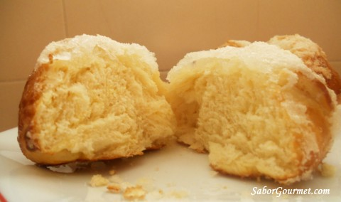

Welcome to Recetas De Bollos
Bollos con crema | Recetas de Paraguay
2021.06.18 21:41
Inicio Entradas Sopas Plato Principal Repostería Bebidas Artículos Recetas de Paraguay Inicio Entradas Sopas Plato Principal Repostería Bebidas Artículos Inicio Recetas Repostería Bollos con crema
Bollos con crema
ReposteríaLos bollos con crema, son un postre tradicional en Paraguay, de mucha popularidad por su gran aceptación. Son bolas de masa fritas rellenas con dulce y cubiertas de azúcar. Simplemente deliciosas.
Preparación: 2 horas
Porciones: 12
Ingredientes
500 gr harina de trigo Pizca de sal 2 yemas de huevo Esencia de vainilla 80 gr de azúcar 30 gr de mantequilla 200 ml de leche 30 gr de levadura fresca Aceite para freírPreparación
En una taza con un poco de leche, se diluye la levadura, una cucharada de azúcar y otra de harina. En un bol, colocar la harina y agregar el azúcar restante, la pizca de sal, las yemas y la mantequilla. Mezclar los ingredientes y añadir la preparación con la levadura. Seguir amasando, integrando más cantidad de leche con la vainilla. La masa debe quedar con una contextura fina que no se pegue de las manos. Colocar la masa en un bol, se cubre con papel film y se dejar reposar en un lugar cálido, hasta doblar el volumen. Luego llevar la masa a la encimera cubierta con un poco de harina y volver a amasarla por unos minutos. Formar una tira con un grosor de unos 4 cm de diámetro aproximadamente y proceder a hacer cortes. Amasar los trozos de masa, de manera que se formen unos bollos. Colocar los bollos en una bandeja engrasada y enharinada, dejarlos crecer por unos 30 minutos aproximadamente hasta que doblen o tripliquen su tamaño. En una sartén con aceite no tan caliente, colocar los bollos cuidadosamente para que no se desinflen, esperar que doren por cada lado. Cuando están listas, se retiran del sartén y se pasan por azúcar. Una vez frías, se cortan de manera transversal, y se rellenan con suficiente crema pastelera, dulce de guayaba o dulce de leche. Se estila dejar ver el contenido de su relleno. Disfrute.Ayúdanos compartiendo esta receta o dejando tu comentario.
Facebook Twitter También le pueden interesar estas recetasChipa so'o
Ensalada fresca
Papas gratinadas
Crema de leche y maizena
Flandín
Crema de leche
Algunas noticias relacionadas con Bollos con crema
Surubí: El pescado gigante que es una delicia culinaria en Paraguay
Paraguay, como sus vecinos Argentina y Brasil, tienen una experiencia intensamente carnívora. Sin embargo, a los paraguayos les gusta consumir el pez gigante surubí convirtiéndolo en una de los favoritos de la cocina.
¿Qué comidas callejeras pueden encontrarse en Asunción del Paraguay?
Como en casi todas las grandes ciudades de América Latina, en Asunción del Paraguay pueden encontrarse una gran cantidad de vendedores de comida en las calles, que suelen ofrecer los típicos productos de la gastronomía local, para comer al paso. Alimentos dulces y salados, generalmente preparados de forma casera, pueden adquirirse en distintos momentos del día en las calles de esta gran urbe.
El tereré, una gran pasión paraguaya
Bebida nacional y acompañante diario de millones de personas en el Paraguay, el tereré es una tradicional y versátil infusión, preparada a base de yerba mate, con múltiples beneficios para la salud. Existen versiones encontradas sobre su origen y sobre su nombre, pero lo seguro es que su consumo es tan popular entre los ciudadanos paraguayos que hasta tiene su propio día oficial.
Sopa paraguaya, la única sopa sólida del mundo.
Suena extraño que un plato que se llame sopa no sea líquido, pero en Paraguay existe. Conoce la tradicional sopa paraguaya, un exquisito pastel salado de queso y harina de maíz.
Origen e historia de la sopa paraguaya
La tradicional y popular sopa paraguaya es una receta habitual en muchos hogares, pero pocos conocen de dónde proviene esta deliciosa comida. ¿Por qué se llama sopa a un pastel salado? ¿Quién la inventó? ¿Es la única sopa sólida que existe? Muchos son los interrogantes que la rodean y aunque no hay datos verificados, sí hay versiones que nos aproximan a conocer su historia y su probable origen.
El chipá paraguayo y sus variedades.
En su receta tradicional, el chipá es un pan hecho con almidón de mandioca y queso, usualmente del tipo semiduro. Conoce sus versiones y variantes.
Leyenda y variedades del mbeju, una tradición paraguaya
Esta clásica y ancestral receta de la gastronomía paraguaya tiene una peculiar leyenda sobre su origen entre las poblaciones guaraníes. Su simple preparación la mantuvo vigente a lo largo de la historia, pero con cambios y transformaciones que dieron origen a una gran cantidad de variedades. Con distintos ingredientes, sabores y técnicas de preparación, esta torta salada se diversificó pero mantiene su esencia.
Algunas recetas que podrían interesarteMbeyú hu'i
Esta variedad de mbeyú tiene la harina de hu'i fermentada en barro o agua y contiene salmuera y grasa.
Tallarines con salsa de carne
Fácil, rica y que incluye todo en un solo platillo, así es la receta de tallarines con salsa de carne.
Caldo de albóndigas
También llamado so'o apu'a esta sopa es una receta ancestral de origen guaraní que se presenta como una insignia de la gastronomía paraguaya.
Otros sitios de cocina por países
Argentina Bolivia Brasil Brasil [PT] Chile China Colombia Costa Rica Cuba Ecuador España El Salvador Guatemala Honduras Italia Japón México Nicaragua Panamá Paraguay Peru Puerto Rico Uruguay VenezuelaOtros sitios de cocina por tipos
Árabes Diabetes Judías Pizzas Simples Vegetariana Veganas Facebook Twitter© Recetas de Paraguay
Para mayor información escríbenos a info@plasticwebs.com
Deliciosas recetas de comida y cocina tipica paraguaya. Las recetas de la comida y cocina de Paraguay son sencillas y faciles de preparar.
Descarga nuestra aplicación en:
Google Play App Store